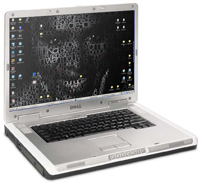

Angelique Kidjo Wallpaper This wallpaper was inspired by an amazing sound of music of West African singer Angélique Kidjo. This wallpaper consists of all song titles from albums available in USA with the most explosive hits highlighted more. These song titles, grayed our and masked in a way to compose an illustation of this Beninese diva.
Download this wallpaper in your favourite resolution: 1440x900, 1280x800, 1024x768, 800x600, 640x480.

This is how it'll look on your computer